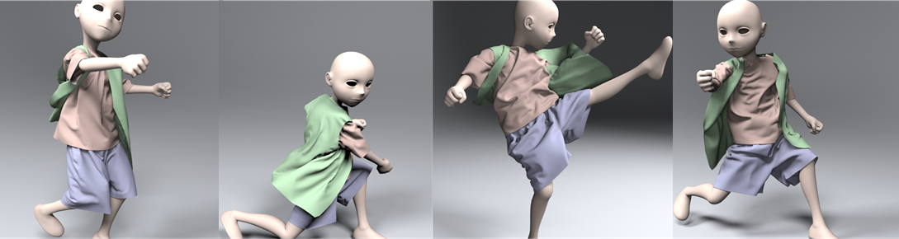

1 - Zhejiang University, China
2 - University of North Carolina at Chapel Hill, USA
3 - Ohio State University, USA

Benchmark Andy: Our GPU-based approach can simulate the clothes dressed on a Kung-Fu boy. The meshes of three cloth pieces are represented by 127K triangles. Our simulator performs all of the computations, including implicit time integration and collision handling, in 2:42s per frame (on average) on an NVIDIA Telsa K40c GPU. Our new parallel algorithms for sparse matrix assembly and collision handling result in significant speedups over prior methods.
Abstract
We present a novel GPU-based approach to robustly and efficiently simulate high-resolution and complexly layered cloth.
The key component of our formulation is a parallelized matrix assembly algorithm that can quickly build a large and sparse
matrix in a compressed format and accurately solve linear systems on GPUs. We also present a fast and integrated solution for
parallel collision handling, including collision detection and response computations, which utilizes spatio-temporal coherence.
We combine these algorithms as part of a new cloth simulation pipeline that incorporates contact forces into implicit time
integration for collision avoidance. The entire pipeline is implemented on GPUs, and we evaluate its performance on complex
benchmarks consisting of 100-300K triangles. In practice, our system takes a few seconds to simulate one frame of a complex
cloth scene, which represents significant speedups over prior CPU and GPU-based cloth simulation systems.
Paper (PDF 2.48 MB)
Min Tang, Huamin Tang, Le Tang, Roufeng Tong, and Dinesh Manocha, CAMA: Contact-Aware Matrix Assembly with Unified Collision Handling for GPU-based Cloth Simulation, Computer Graphics Forum, 35(2): 511-521, (Proceedings of Eurographics 2016), 2016.
@article{cama16,
author = {Tang, Min and Wang, Huamin and Tang, Le and Tong, Ruofeng and Manocha, Dinesh},
title = {{CAMA}: Contact-Aware Matrix Assembly with Unified Collision Handling for {GPU}-based Cloth Simulation},
journal = {Computer Graphics Forum (Proceedings of Eurographics 2016)},
volume = {35},
number = {2},
pages = {511--521},
year = {2016},
}
Video (63.5 MB)
A GPU-based Streaming Algorithm for High-Resolution Cloth Simulation
UNC dynamic model benchmark repository
Collision-Streams: Fast GPU-based Collision Detection for Deformable Models
Fast Continuous Collision Detection using Deforming Non-Penetration Filters
MCCD: Multi-Core Collision Detection between Deformable Models using Front-Based Decomposition
Fast Collision Detection for Deformable Models using Representative-Triangles
DeformCD: Collision Detection between Deforming Objects
Self-CCD: Continuous Collision Detection for Deforming Objects
Interactive Collision Detection between Deformable Models using Chromatic Decomposition
Fast Proximity Computation Among Deformable Models using Discrete Voronoi Diagrams
CULLIDE: Interactive Collision Detection between Complex Models using Graphics Hardware
RCULLIDE: Fast and Reliable Collision Culling using Graphics Processors
Quick-CULLIDE: Efficient Inter- and Intra-Object Collision Culling using Graphics Hardware
This research is supported in part by the National High-Tech Research and Development Program (No.2013AA013903) of China, the National Key Technology R&D Program of China (2012BAD35B01). Min Tang is supported in part by NSFC (61572423, 61170140), Zhejiang Provincial NSFC (LZ16F020003), the Doctoral Fund of Ministry of Education of China (20130101110133), and EU ANNEX project (612627). Dinesh Manocha is supported in part by ARO contract W911NF-14-1-0437 and NSF grant 1547106, and the National Thousand Talents Program of China. Huamin Wang is supported in part by NVIDIA and Adobe. Ruofeng Tong is partly supported by NSFC (61572424, 61170141). We gratefully acknowledge the support of NVIDIA Corporation for the donation of Tesla K20x/K40c GPUs used for this research. We thank FxGear for providing the models for Benchmark Andy, Bishop, and Falling. We also thank Zhendong Wang for useful discussions and making the video.
CB #3175, Department of Computer Science
University of North Carolina
Chapel Hill, NC 27599-3175
919.962.1749
geom@cs.unc.edu